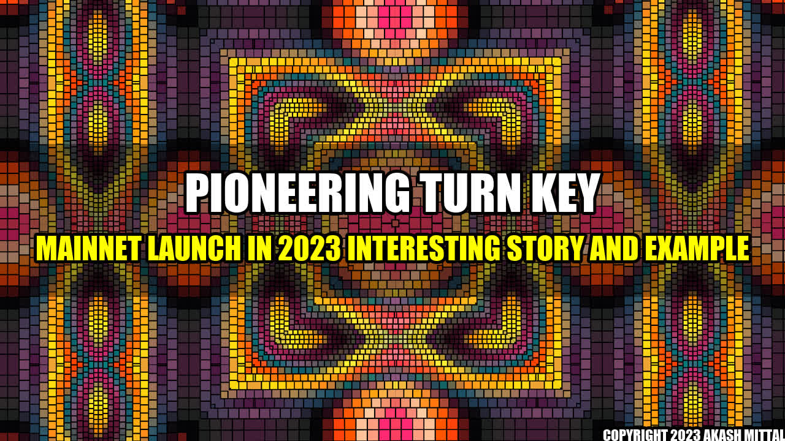

Base’s Plans for Mainnet Launch in 2023 | Interesting Story and Example

Have you ever imagined a world where you can transact cryptocurrencies instantly without worrying about high network fees and slow transaction times? Coinbase’s layer-2 blockchain Base is on a mission to make this a reality. And according to their recent announcement, Base is all set to launch their mainnet in 2023, which is expected to revolutionize the crypto industry.
Imagine this - a small business owner in a remote village in Africa wants to sell his handmade goods to customers in other parts of the world. He has a smartphone and internet connection, but high fees and slow transaction times on the Ethereum network make it impossible for him to accept cryptocurrencies as payment. But with the launch of Base’s mainnet, he can easily transact cryptocurrencies at a much lower cost and faster speed, making it easier for him to grow his business and reach a wider audience.
Example
So, how exactly will Base’s mainnet work? Here are some concrete examples:
- Low fees: Base’s mainnet will enable users to transact cryptocurrencies at a fraction of the cost compared to the Ethereum network. This means that small business owners, freelancers, and individuals can all transact cryptocurrencies without worrying about high fees eating up their profits.
- Fast transaction times: With the use of layer-2 technology, Base’s mainnet will have faster transaction times compared to the Ethereum network. This will enable users to transact cryptocurrencies instantly, making it ideal for day-to-day transactions.
- Scalability: As more users join the Base network, it will continue to scale and provide faster and cheaper transactions. This will make it easier for businesses to accept cryptocurrencies as payment and enable them to reach a wider audience.
To sum up..
- Base’s layer-2 blockchain is set to launch their mainnet in 2023, which is expected to revolutionize the crypto industry.
- Their mainnet will offer low fees, fast transaction times, and scalability, making it ideal for businesses and individuals to transact cryptocurrencies.
- This will enable a wider adoption of cryptocurrencies and make it easier for small businesses and individuals to reach a global audience.
References and Further Reading
Social
Share on Twitter Share on LinkedIn